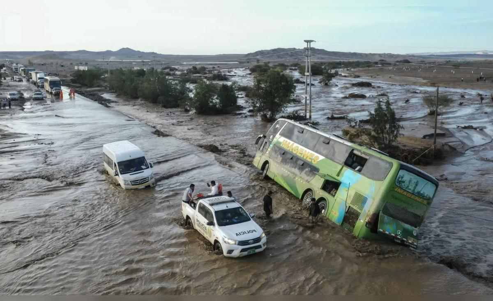

La medida habilita atención inmediata a población vulnerable y preparación ante desbordes, huaicos e inundaciones en zonas de alto riesgo hidrometeorológico.

El Poder Ejecutivo declaró el estado de emergencia en 893 distritos ubicados en 22 regiones del Perú ante el peligro inminente de lluvias intensas asociadas al Fenómeno El Niño. La medida, oficializada mediante decreto supremo, busca activar de manera anticipada los mecanismos de respuesta del Estado para proteger a la población más expuesta y reducir el impacto de posibles desastres naturales.
Según la información difundida por las autoridades, la declaratoria permitirá que los gobiernos regionales y locales, junto con el Instituto Nacional de Defensa Civil (INDECI), ejecuten acciones inmediatas de preparación, prevención y atención de emergencias. El objetivo es garantizar que las zonas más críticas cuenten con los recursos logísticos y humanos necesarios antes de que se produzcan los eventos climáticos de mayor magnitud.
La declaratoria de emergencia no implica que los desastres ya estén ocurriendo, sino que existe un peligro inminente y se requiere movilizar recursos de forma urgente. El Fenómeno El Niño provoca alteraciones en los patrones de lluvia, aumentando la probabilidad de precipitaciones extremas en la costa norte y la sierra del Perú. Estas lluvias pueden desencadenar huaicos, deslizamientos de tierra, desbordes de ríos e inundaciones en zonas urbanas y rurales.
Al declarar la emergencia en cientos de distritos, el Gobierno central faculta a las autoridades subnacionales a utilizar presupuesto público de manera excepcional y a realizar contrataciones directas para la adquisición de maquinaria, combustible, alimentos, carpas, medicinas y otros bienes de primera necesidad. También se agiliza la intervención de las Fuerzas Armadas y de la Policía Nacional en tareas de apoyo logístico y evacuación.
El INDECI, como ente técnico rector del Sistema Nacional de Gestión del Riesgo de Desastres, coordinará con los centros de operaciones de emergencia regionales y locales para monitorear permanentemente los caudales de los ríos, los niveles de saturación del suelo y los pronósticos meteorológicos. La información generada por el Servicio Nacional de Meteorología e Hidrología (SENAMHI) será clave para activar alertas tempranas.
Las regiones del norte peruano, como Tumbes, Piura, Lambayeque y La Libertad, históricamente han sufrido los efectos más severos de los fenómenos El Niño. Las lluvias intensas en estas zonas suelen provocar el desborde de quebradas y ríos, dejando a miles de familias damnificadas y dañando infraestructura vial, agrícola y de saneamiento. La declaratoria de emergencia busca que estas regiones estén preparadas con anticipación y no se repitan escenas de desabastecimiento o aislamiento.
En la sierra, especialmente en departamentos como Áncash, Cajamarca, Huánuco, Junín, Cusco y Puno, el principal riesgo son los huaicos y deslizamientos. Las pendientes pronunciadas y la deforestación aumentan la vulnerabilidad de las poblaciones asentadas en laderas o al pie de quebradas. Las lluvias persistentes saturan los suelos y generan movimientos de masa que pueden sepultar viviendas, carreteras y puentes.
La medida gubernamental también contempla la protección de la infraestructura estratégica, como reservorios, canales de riego, centros de salud y escuelas. Se ha instruido a los gobiernos regionales a priorizar la limpieza de cauces, la estabilización de taludes y la revisión de los sistemas de drenaje urbano.
Con la publicación del decreto supremo, los gobiernos regionales y locales quedan facultados para ejecutar medidas de excepción en los distritos comprendidos. Entre las principales acciones se encuentran:
Primero, la adquisición directa de bienes y servicios necesarios para la atención de emergencias, sin los procedimientos ordinarios de contratación pública. Esto permite comprar de manera rápida combustible para maquinaria, alimentos no perecibles, frazadas, calaminas, motobombas y otros insumos críticos.
Segundo, la movilización de personal y equipos a las zonas de mayor riesgo. El INDECI coordinará el despliegue de brigadistas, ingenieros y especialistas en gestión del riesgo, así como el traslado de maquinaria pesada para la limpieza de cauces y la construcción de defensas ribereñas temporales.
Tercero, la habilitación de albergues temporales y la identificación de rutas de evacuación. Los municipios deberán actualizar sus planes de contingencia y difundir entre la población los procedimientos de alerta, alarma y evacuación. Se pondrá especial énfasis en las comunidades rurales de difícil acceso.
El INDECI, en su calidad de organismo técnico, emitirá las orientaciones para la implementación de las acciones de preparación y respuesta. Asimismo, supervisará que los recursos transferidos a los gobiernos regionales y locales se utilicen exclusivamente para los fines de la emergencia y no se desvíen a otras actividades.
Los gobiernos regionales, por su parte, deberán presentar informes periódicos sobre el avance de las medidas adoptadas. Se espera que cada región priorice los distritos más vulnerables, en coordinación con las municipalidades provinciales y distritales. La articulación entre los tres niveles de gobierno es fundamental para evitar duplicidades y garantizar que la ayuda llegue a quienes realmente la necesitan.
Además, se ha dispuesto que las Fuerzas Armadas y la Policía Nacional brinden apoyo en tareas de evacuación, seguridad y control del orden público en las zonas declaradas en emergencia. Los ministerios de Salud, Educación, Vivienda y Transportes también participarán con sus respectivos programas de contingencia.
Las autoridades han instado a la ciudadanía a mantenerse informada a través de los canales oficiales y a no difundir rumores. Ante la llegada de lluvias intensas, se recomienda identificar las rutas de evacuación, proteger documentos importantes, almacenar agua segura y alimentos no perecibles, y alejarse de las riberas de ríos y quebradas.
En las zonas urbanas, es importante limpiar techos y canaletas, evitar arrojar basura a los desagües y reportar cualquier obstrucción en los sistemas de drenaje. En las zonas rurales, se recomienda asegurar los animales y los cultivos, y estar atentos a las indicaciones de los comités comunitarios de defensa civil.
El INDECI ha recordado que la prevención es una tarea compartida entre el Estado y la población. La declaratoria de emergencia no sustituye la responsabilidad individual y familiar de prepararse ante una posible emergencia. Cada hogar debe contar con un plan familiar de protección y una mochila de emergencia con artículos básicos.
El Fenómeno El Niño es un evento climático natural que se produce por el calentamiento anómalo de las aguas superficiales del océano Pacífico ecuatorial. Este calentamiento altera los patrones de circulación atmosférica y genera lluvias intensas en la costa norte de Sudamérica, así como sequías en otras regiones del planeta.
En el Perú, los eventos El Niño más recordados han dejado pérdidas millonarias y miles de damnificados. Las lecciones aprendidas de episodios anteriores, como los de 1982-1983, 1997-1998 y 2017, han llevado al Estado a fortalecer sus sistemas de alerta temprana y a declarar emergencias de manera anticipada, con el fin de evitar que los desastres se conviertan en tragedias de gran magnitud.
La decisión de declarar en emergencia 893 distritos de 22 regiones se enmarca en esa estrategia de preparación. No se trata de una medida aislada, sino de un esfuerzo integral que involucra a todos los sectores del Estado y a la cooperación internacional. Se espera que, con esta acción, el Perú esté mejor posicionado para enfrentar los embates del clima y proteger la vida y los medios de subsistencia de su población.